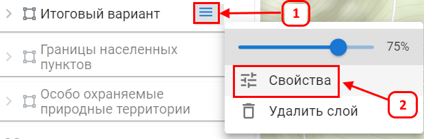
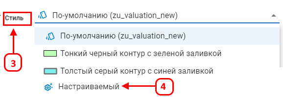
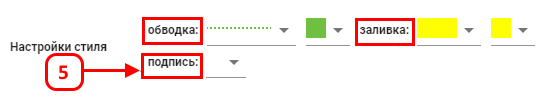
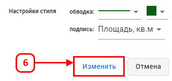
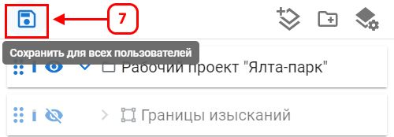

Подписи для слоя
Вывод подписей на основе атрибутов объекта позволяет указать один из атрибутов векторной таблицы, содержимое которого будет отображаться на карте. Это упрощает маркировку и идентификацию объектов.
Настройка подписей для объектов слоя:
- Откройте меню cвойства слоя (2).

- В разделе Стиль (3) выберите настраиваемый (4).

- В блоке Настраиваемый задайте параметр подпись (5) Откройте выпадающий список и выберите нажный атрибут (например, "Номер" , или "Площадь вычисляемая, м.кв.").

- Нажмите (6) для применения настроек стиля.

- Нажмите (7), чтобы сохранить внесенные изменения слоя в проекте.

После настройки выбранный атрибут будет отображаться в виде подписи на карте для всех объектов слоя.